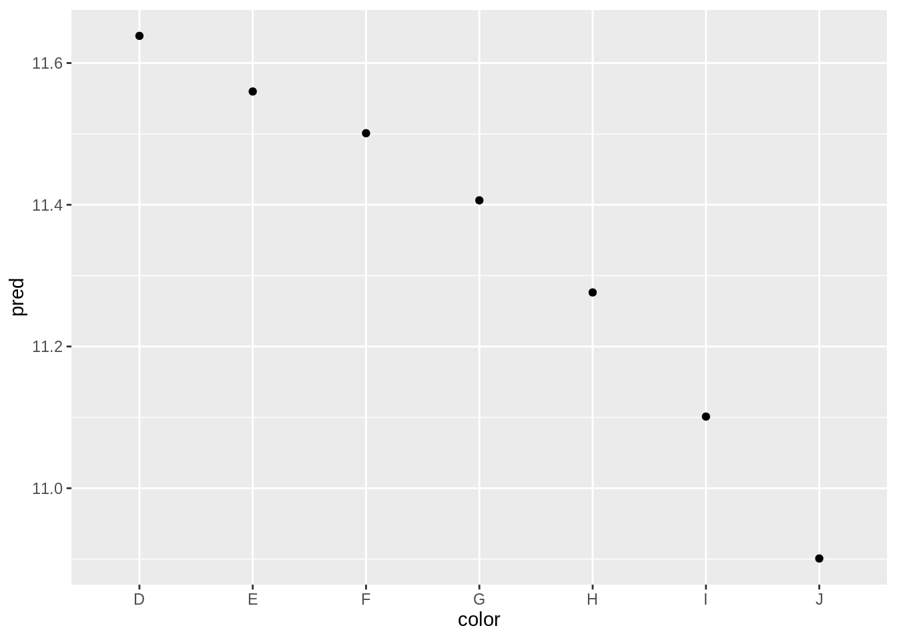
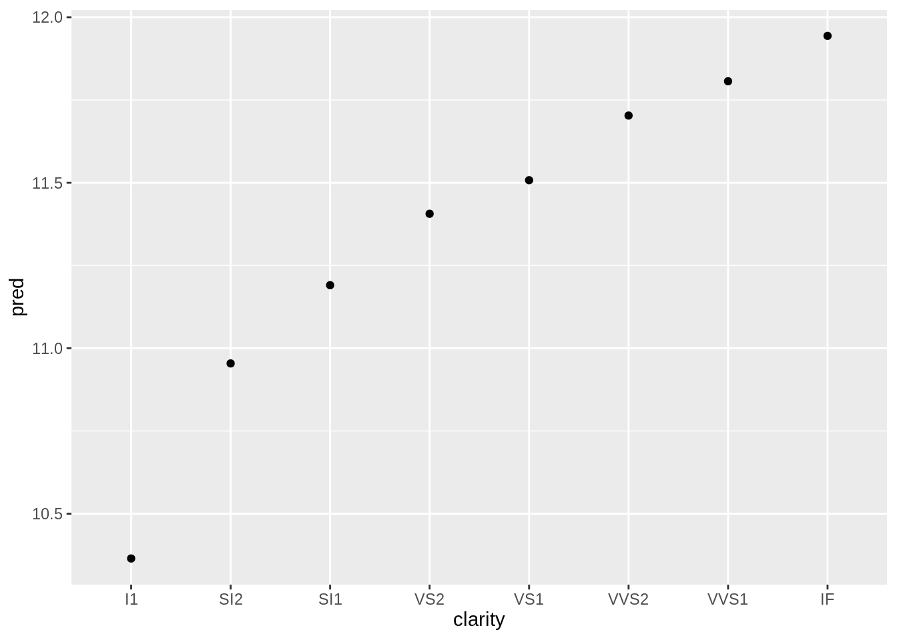
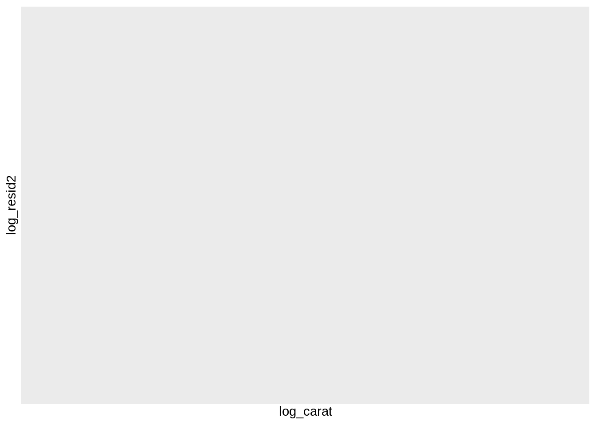

24.4 Another Diamonds Model
mod_diamond2 <- lm(
log_price ~ log_carat + color + cut + clarity,
data = diamonds2
)
plot_mod2 <- function(parameter) {
grid <- diamonds2 %>%
data_grid({{parameter}}, .model = mod_diamond2) %>%
add_predictions(mod_diamond2)
ggplot(grid) +
aes(x = {{parameter}}, y = pred) +
geom_point()
}
plot_mod2(cut)


diamonds2 <- diamonds2 %>%
add_residuals(mod_diamond2, "log_resid2")
ggplot(diamonds2) +
aes(log_carat, log_resid2) +
geom_hex(bins = 50)## Warning: Computation failed in `stat_binhex()`: